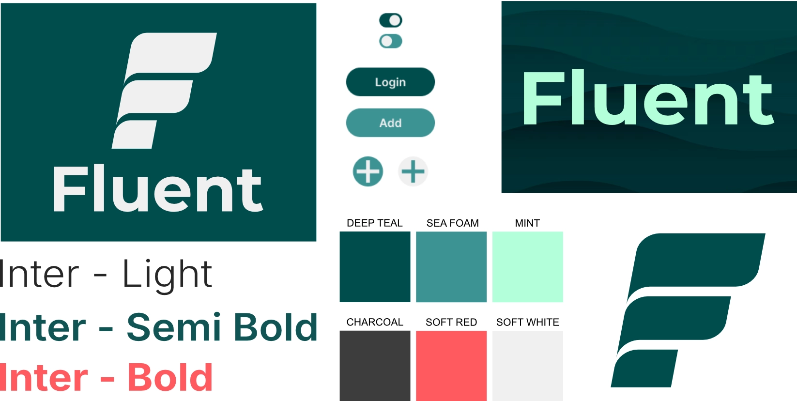
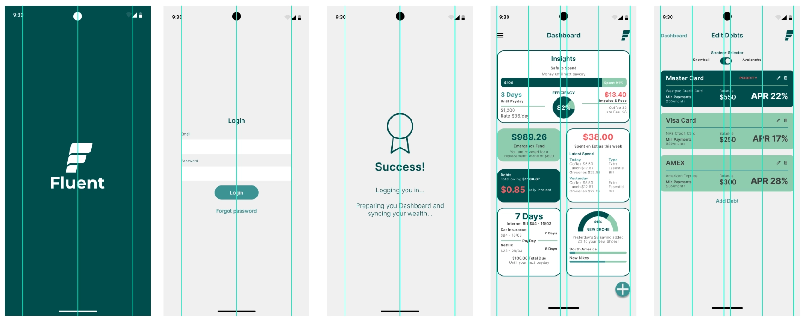
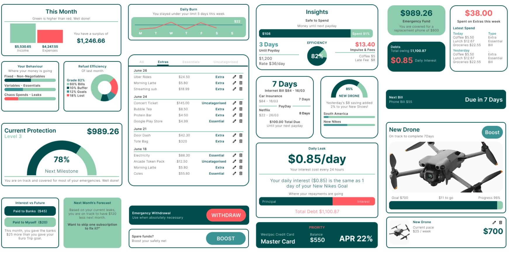
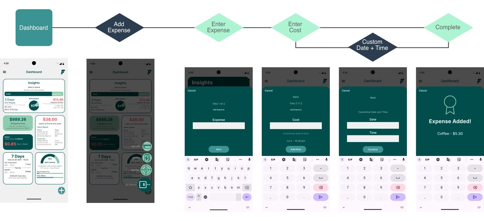

Fluent Money
Lead Product Designer & UX Architect
The Problem
Managing personal money is historically plagued by information overload and intimidating, jargon heavy numbers. Standard budgeting tools often trigger financial anxiety,
causing users to abandon their financial tracking entirely due to dense, punitive interfaces.
The Solution
Finance explained in plain English. Fluent eliminates the financial literacy gap by replacing overwhelming data arrays with an empathetic, human centric Bento Grid dashboard.
It translates raw data into actionable, easy to understand insights, empowering users to make informed financial decisions without the stress of traditional budgeting tools.
Spotting the Market Gap: Competitive Strategy
By cultivating an open minded approach to market research, I spotted a distinct business opportunity when auditing industry anchors like Mint and YNAB. Mint's visual clutter created navigational confusion, while YNAB's text heavy density triggered user avoidance. Fluent bridges this gap through a Hybrid Model (Icon + Label), establishing a highly scannable dashboard backed by empathetic, actionable alerts.

Targeted Personas for Financial Behaviors
To ground the product in real user needs, I mapped two distinct archetypes, seamlessly leveraging my Midjourney workflow to rapidly visualize and humanize these profiles for stakeholder alignment: Maya (29), a gig economy freelancer battling platform fatigue across fragmented income streams, and Leo (24), an early career professional whose financial anxiety is triggered by rigid balance sheets. These profiles established our core UX mandate: replace punitive warnings with a plain-English "Safe to Spend" engine.

Fluid Brand Architecture & Design Tokens
Leveraging 20 years of branding discipline, I designed a fluid wave logo mark symbolizing financial momentum. I paired the geometric clarity of Inter typography with a deliberate semantic color system: Deep Teal for structural boundaries, Mint for optimistic success indicators, and Sea Foam for secondary controls all mapped directly into reusable, WCAG compliant UI design tokens.

Grid Systems & Spatial Hierarchy
Drawing from deep print production composition rules, I engineered a responsive 4-column layout grid in Figma to govern spatial alignment. Standardized container radiuses, consistent gutter margins, and clean vertical rhythm guarantee that high data density remains completely calm and scannable across all screen dimensions.

The Unified Bento Grid Ecosystem
To make complex financial data digestible at a glance, I engineered a unified Bento Grid system. Each card functions as an independent, self contained module designed to communicate asymmetric data streams ranging from real time "Safe to Spend" indicators to daily interest calculations.
By applying uniform card radiuses, clear typographic hierarchy, and semantic color accents, the dashboard organizes high data density into a calm layout. This modular containment prevents information overload while keeping critical financial controls immediately accessible.

Step-by-Step Interaction Flows
To eliminate cognitive overwhelm when logging manual expenses, the interface breaks multi field forms into isolated interaction states. By requesting only one data point per step, the system drastically reduces form fatigue. Furthermore, single-component input validation verifies entries before updating global state models, ensuring accurate data collection.

Designing for Real-World Engineering
[Action Item for Alfredo: Add 2-3 sentences here detailing how the UI handles external data connections (e.g., standardizing Plaid API loading states or managing sync errors gracefully). Mentioning how you design for the "unhappy paths" of data syncing proves you think like a true Product Designer.]
Front End Bento Grid Architecture
To guarantee a frictionless handoff from Figma to engineering, I architected a responsive CSS Grid layout engine. Using asymmetric column spans (grid-column: span 2) for hero insights alongside
fluid media queries, the front end layout perfectly preserves the mathematical alignment of the design system from desktop viewports all the way down to mobile screens.
/* Responsive Bento Grid Dashboard Layout */
.fluent-dashboard-grid {
display: grid;
grid-template-columns: 1fr;
gap: 1.25rem;
max-width: 1200px;
}
@media (min-width : 768px) {
.fluent-dashboard-grid {
grid-template-columns: repeat(3, 1fr);
}
.hero-insights-card {
grid-column: span 2;
}
}